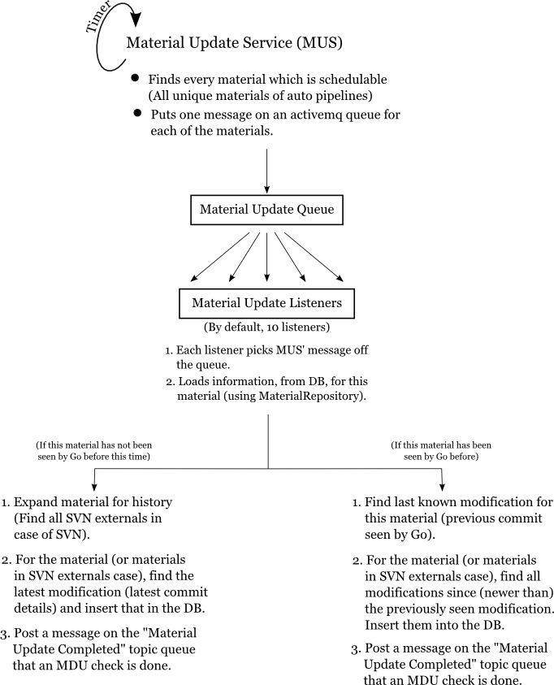

- Introduction
-
1.
Concepts in Go
- 1.1. Domain
- 1.2. Implementation
- 2. Getting Started
-
3.
Technology Stack
- 3.1. Plugins Architecture - OSGi
- 3.2. Object Relation Mapping (ORM) - Hibernate & IBatis
- 3.3. Caching - EhCache
- 3.4. Dependency Injection (DI) - Spring
-
3.5. Model View Controller (MVC)
- 3.5.1. Models - Java
- 3.5.2. Controllers - Servlets & Rails
- 3.5.3. Views - Rails & Velocity
- 3.6. User Interface (UI) - jQuery & Prototype, SCSS, HTML
- 3.7. Build Tool - Buildr
-
4.
Architecture of Go
- 4.1. Overview
- 4.2. Go Server
- 4.3. Go Agent
-
4.4.
Common
- 4.4.1. Plugin Architecture
- 4.4.2. [Agent - Server Communication](
- 4.5. Build Infrastructure
-
5.
Features
- 5.1. Dashboard
- 5.2. Fan-in
- 5.3. Value Stream Map
- 5.4. Compare Pipeline
- 5.5. PackageRepository
- 5.6. Command Repository
- 5.7. Environments
- 5.8. Templates
-
5.9. Shine
- 5.9.1. Test Artifact Parser
- 5.9.2. Reporting
- 5.9.3. Stage Graph
- 5.10. OAuth Gadgets
- 5.11. Backup
- 6. CD in practice
- 7. Miscellaneous
- Published using GitBook
4.2 Go Server
The Go server is made up of multiple sub-systems, communicating between themselves using ActiveMQ message queues and the database. The main sub-systems in the Go server are:
- Material update sub-system
- Scheduling sub-system
- Work assignment sub-system
Material update sub-system (MDU)
This sub-system is called MDU for historical reasons (originally, "Material Database Updater"). It runs off of a timer and a method is invoked on it periodically. Every time it gets called, it does this:
- Checks each material to see if there are any new commits.
- If found, it puts information about them into the database (modifications).
You can read more about this here.
Scheduling sub-system (Scheduler)
It runs off a timer and a method is invoked on it periodically. Every time it gets called, it does this:
- For every automatically schedulable pipeline (ignoring timer triggered pipelines, manual pipelines, paused pipelines, etc), checks if any new modification is available for one of its materials.
- If available, it schedules a build (creates jobs to be run).
You can read more about this here.
Work assignment sub-system
This sub-system gets activated by the agent communicating with the server. Every time an agent communicates with the server, the server assigns a matching job to the agent, based on the job's resources and environment.
You can read more about this here.
Other sub-systems
Apart from these three main sub-systems, there are some other sub-systems and modules worth mentioning:
- Configuration management module
- User interface (UI) sub-system
- Plugin sub-system
Configuration management module
Largely made up of the two smaller modules, config-server and config-api, in code, the configuration management module is responsible for all of the activities around serializing and deserializing the configuration object from and to the configuration XML.
You can read more about this here.
User interface (UI) sub-system
This subsystem is composed mainly of a Rails application running on JRuby, fronted by the Jetty web server, with Spring's Web MVC framework for the servlets. All HTTP and HTTPS requests get routed through Jetty and Spring, through a URL rewriting layer and then comes to Rails' routing layer.
You can read more about this here.
Plugin sub-system
This sub-system is responsible for communication with all the plugins in the system and the framework around them, including installation and registration, to handling missing plugins. It is used by other sub-systems, as needed. In code, the modules involved in this sub-system are go-plugin-api, go-plugin-activator, go-plugin-infra and go-plugin-internal-api.
You can read more about this here.
4.2.1 Configuration Management
There are multiple ways to configure Go:
- Admin interface in UI - These let you modify only specific section of the config
- Config XML tab in Administration section - This would let you modify the entire config at one place, however requires a deeper understanding of the xml
- Config API - If you do not like using the UI, config API is meant for you, however, this again deals with plain xml
- Changes made to config file through file system
Go configuration is saved to a file store cruise-config.xml and immaterial of the method chosen, changes would be save to the same file.
4.2.1.1 XSD & XML
cruise-config.xml conforms to the cruise-config.xsd. The xml is deserialized to CruiseConfig before being passed around in code, the same is then serialized at the time of save into the xml format.
A number of validations are run before a config change would be saved:
- XSD validation to ensure the schema is correct
- Validations performed by the class representation of xml elements (via the Validatable interface)
- Miscelleneous validations performed by implementors of GoConfigValidator
Since, the config file is a simple xml file placed on the file system, changes to this file can be made by editing this file. However, any changes to this file would go through the same validation process.
config-api and config-server modules deal with configuration management. While config-api is shared by both Go server and agent, config-server is exclusively referenced by Go server.
4.2.1.2 Schema Migration
Go being an ongoing project, there are bound to be changes to the config schema. However, as Go has been in production for a few years now, we need to ensure that all existing users can upgrade smoothly without any manual intervention. In order to achieve this, every change to the schema is assigned a schemaVersion, and a XSLT migration is written to ensure configuration upgrade happen in an automatic fashion. During server upgrade, all the xslt migrations from the current version until latest would be executed in a sequential fashion.
To elaborate this further, lets say the current schemaVersion is 100 and we wish to edit an existing node in the xsd. Writing a schema migration for the same would involve a few steps:
Make a copy of the current cruise-config.xsd, and place it at
config/config-server/resources/schemas/100_cruise-config.xsdMake the relevant changes to the cruise-config.xsd file. Update the schemaVersion tag to '101'.
Write an xslt migration
config/config-server/resources/upgrades/101.xslto migrate a config on version 100 to version 101.Write an integration test to cover the above change.
4.2.1.3 Config Repository
Go configuration is version controlled in a local git repository, config.git hosted on the Server machine. Any changes to the config, either through file-system or through Go dashboard would be saved as a commit on this repo. As such all changes to the config can be audited or reverted if need be.
All interactions to the repo is done using jgit, and the repo itself is managed by ConfigRepository. The commits made to this repository need to be in a certain format and hence manual changes/commits to this repo would cause errors in Go.
4.2.1.4 Config Merge
Building upon the config repository feature, Go makes use of git merge to support concurrent modifications to the config file.
When a user makes a request to get the config, the computed MD5 of config is also sent as a part of the response, this MD5 would be submitted as post data when the user submits their change. If the submitted MD5 matches that of the latest config, the new change would be saved, of course if the validations pass.
If the submitted MD5 doesnot match, a need to merge config arises.
To elaborate on this, consider two users user1 and user2 trying to change the config concurrently. Both submit their changes with say 'md5-10' as the MD5 value.
Lets say the latest commit on config.git is 'git-sha-10' with MD5 value 'md5-10'. Say user1's request was received first, and a new commit 'git-sha-11' with MD5 'md5-11' was made to the repo corresponding to user1's change.
Now, the request from user2 is received, since the MD5 from request does not match the latest MD5, a need to merge arises.
By default Go works on master, however to deal with the above scenario, two new branches would be created. 'branch-at-head' is at the same revision as master. 'branch-at-revision' is at revision 'git-sha-10' (ie. the revision corresponding to the MD5 that user2 knows about). The changes made by user2 are committed to 'branch-at-revision'. 'branch-at-revision' will then be merged to 'branch-at-head'. If the merge is successful, the changes from the merged commit would be committed to master. If the merge fails, config save would not go through and an error is thrown to the user.
4.2.1.5 Config Diff
The MD5 of the config corresponding to each stage run is saved in the database. Users can hence view the changes that have been made to the config between the multiple runs of a given stage. Go would get the git SHA corresponding to a given MD5 value. Jgit gives the diff between the two revisions which could be seen on the stage details page.
4.2.2 Database Management
Go uses H2 Database as its choice of data store. In Go, H2 operates in an embedded mode, loaded into Go's JVM. As of the time this document was written, the H2 version in use was 1.3.168.
4.2.2.1 Schema
The database schema is primed as part of the database migration scripts that run during startup. An overview of the database schema is shown below:

4.2.2.2 Database migrations
Go uses DB Deploy to run DDLs/DMLs on the H2 database instance named cruise.h2.db. The deltas are added under
~/projects/go$ cd server/db/migrate/h2deltas
~/projects/go/server/db/migrate/h2deltas$ ls
10_add_stage_timestamp.sql
35_rename_usersettings_table.sql
...
The naming scheme that is followed is
< 2 character major release number >< 2 character minor release number >< 3 character migration number >_< migration file name >.sql
For example, for major release 14, minor release 02 and migration number 005, the file name would be: 1402005_create_a_table_for_something.sql
A guide on how to add a database migration can be found here.
4.2.2.3 Backup
At the filesystem level, backing up the database includes copying over the cruise.h2.db file. The backup feature in Go utilizes a H2 feature which helps taking a hot backup of the database while it is in use. com.thoughtworks.go.server.service.BackupService, along with other items, backups the H2 database as well. The void backupDb(File) method is the starting point of the execution flow which achieves this.
com.thoughtworks.go.server.service.BackupService
...
private void backupDb(File backupDir) throws SQLException {
databaseStrategy.backup(backupDir);
}
...
4.2.3 Material update sub-system (MDU)
This sub-system is called MDU for historical reasons (originally, "Material Database Updater"). As its name suggests, its job is to update the materials configured in the system to their latest state. For SCM materials, this means recording commits which have happened since the last time they were checked; for package materials, this means giving the plugins a chance to find newly uploaded packages, and so on.
Here is an overview of its internals:

The MDU (specifically, the MaterialUpdateService class being the starting point of this sub-system), gets a timer
triggered callback periodically. When it gets that, it uses the configuration to find all the unique
materials across pipelines.
For each unique material found, it sends a message to the MaterialUpdateQueue. Now, the MaterialUpdateListeners
will pick up the messages and do an MDU check for the material specified in the message. Once a new commit is seen, they
use the MaterialRepository to insert information about the commit into the database. This information about the
commit is called "Modification".
Once this update is done (or no new commit or change was found), a message is sent back to the
MaterialUpdateCompletedTopic to notify other parts of the system that an MDU check was completed. This message is
subscribed to and listened for by the scheduler sub-system as well as the MDU itself to do various tasks they need to do
after an MDU check is done.
Some other concepts related to the MDU
Idle time
Not every unique material found will actually be checked every time. There is a configurable "idle" time (defined by the
system property material.update.idle.interval), which specifies the minimum time which should elapse between two MDU
checks for a material. Every time the timer is triggered, this interval is checked. If the MDU check for this material
has been run within the interval time, the material is skipped and will be checked again, when the timer is triggered
the next time.
In-progress material update
If a material update takes a long time, longer than the timer interval, then there is a possibility of another MDU check starting for the same material. This can cause issues with version control systems. To prevent this, the server keeps track of every material in the queue and makes sure that another MDU check will not start for the same material. If a material is taking a long time to update, then you might see a log message about skipping its update and about it being in-progress.
4.2.3.1 Material Fingerprint & Flyweights
WIP
4.2.3.2 Supported Materials
WIP
4.2.4 Build Cause Production
WIP
4.2.5 Pipeline Scheduling
WIP
4.2.6 Work Assignment
WIP
4.2.6.1 Resource & Environment Mapping
WIP
4.2.7 Artifact Management
WIP
4.2.8 User Management
WIP
4.2.8.1 Authentication Management
WIP
4.2.8.2 Enable, disable & delete users
WIP
4.2.8.3 User Role Management
WIP
4.2.9 Agent Management
WIP
4.2.10 User Interface Architecture
As we mentioned we are using .html.erb(Rails) and .vm(Velocity) files for writing our markup and .SCSS for styling, so it will get converted into HTML and CSS by their respective frameworks. And we are using jQuery for API calling and event binding.
Most of the front-end files resides inside rails/app folder where we have folders called views and vm, which groups all the .ERBs and .VMs respectively.
Now let's understand, how the UI is architected in the Go. And understand how HTML, CSS, and JavaScript is organized.
4.2.10.1. Markup : HTML
We've already talked about versioning part. So lets directly jump into file structure. HTML part is little complex, as we are using two different frameworks. Most of the files are inside app/views folder, where we have very modular structure and various type of markup files.
Layout Files: All the layout files are inside a folder called
views/layouts, where we've kept all the common files getting used by the other pages. We've various layout files likeadmin,agents,pipelines,value-stream-mapetc.Shared Files: The files which are getting used at more than one files or layouts, we've kept all of them in two shared folders. Both the frameworks, Rails and Velocity has their
sharedfolder.Other Files: All the other files are grouped according to concepts or module.
Generally, we do use .erb almost everywhere, except few places like Job Details, Pipeline History, Login and Preference. We've .vm files for these other pages.
Spec tests for Markup
We've a spec testing framework integrated to validate or test rails markup. We've a stage configured for it, which will do automatic testing of markup. It will compare current result with the expected to find out any regression.
4.2.10.2. Styling : CSS, SASS
As mentioned earlier, we are not going to write plain CSS anymore but SASS. So, the compilation and conversion of SASS to CSS will be taken care by a rails sass gem.
As mentioned in UI tech stack chapter, we are restructuring our front-end CSS structure as well, here is what it will looks like eventually, we've started with moving few css rules from CSS files to their relative SCSS files.
base
|--mixins.sass
|--reset-g9.sass
|--sprites.scss
|--variables.scss
components
|--alerts.scss
|--labels-badges.scss
|--messages.sass
|--navbar.scss
|--pagination.scss
|--treenav.sass
|--wizard.sass
gadgets
|--breadcrumb.scss
|--button-groups.scss
|--docked-toolbar.scss
|--dropdowns.scss
|--forms.scss
|--layouts.sass
|--modals.scss
|--popovers.scss
|--progress-bars.scss
|--scaffolding.scss
|--tabs.sass
|--tooltip.scss
global
|--layout.scss
|--reset.scss
|--responsive.scss
|--typography.scss
go-pages
admin
|--template.sass
|--agent.scss
|--admin.scss
|--admin/templates.scss
|--vsm.scss
|--history-panel.scss
|--pipeline.scss
We've lots of CSS files for individual UI elements inside stylesheets. As well as we've a file called application.css inside webapp/css folder, where we've defined the application level style rules.
All the CSS files inside different folders of stylesheets folder will be merged into a single file inside their respective folders. E.g. all the CSS files in patterns folder will be merged as patterns.css and will be there in patterns folder. And all the files inside sass folder will be eventually merged into a file called css_sass.css by a method written in helper file.
How to add a new SCSS file?
After adding a .SCSS file inside any folder mentioned above, you will have to refer or include them in two different places _css.html.erb and _header.vm depends on where you want to use.
How to update changed SCSS file?
You can run following command after modifying the content in any .scss file. cd server/webapp/sass && sass --update .:../stylesheets/css_sass && cd ../../... Or you can add --watch attribute for live update.
4.2.10.3. Scripting: JavaScript, jQuery and Prototype
All the JavaScript files are inside webapp/javascripts folder. We've already mentioned a list of 3rd party libraries that we are using. There is an application level file called application.js inside webapp/javascripts.
To import JavaScript files you will need to define them in _head.html.erb. It has a flag inside called use_compressed_js which will decide whether it should merge all the file into all.js or not, the individual files listed after a tag javascript_include_tag is the sequence of how all the files will be included in the document.
All the JS files will be merged into a single file called all.js and will be placed inside compressed folder whenever we create a package along with d3.js. Browsers without SVG support will not be served file d3.js, we are keeping it isolated, especially for IE8.
4.2.11 APIs, CCTray & Feeds
WIP